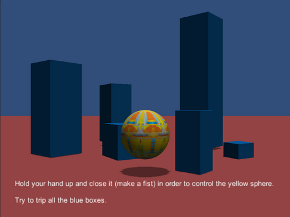
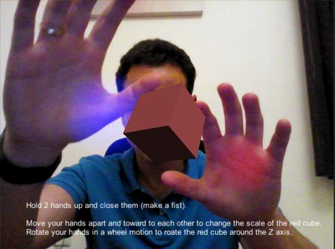
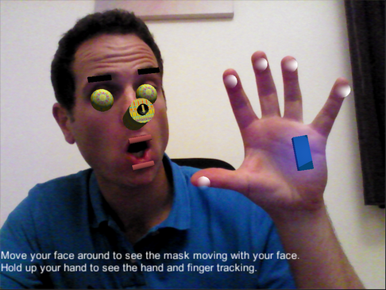
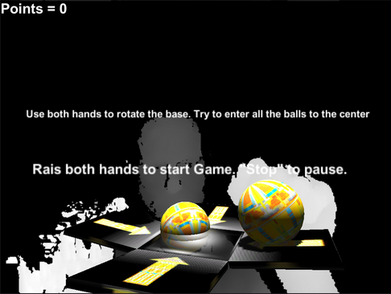
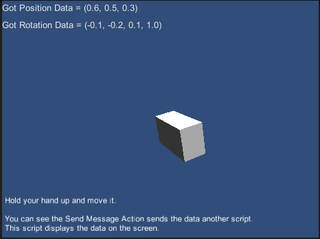
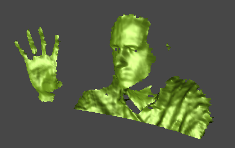
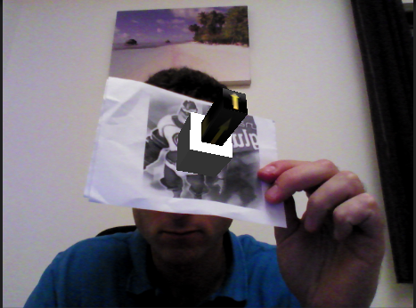

The SDK Unity Toolkit exposes the following samples:
 Copy the sample source to a writable folder before running the sample in Unity Editor.
Copy the sample source to a writable folder before running the sample in Unity Editor.
Sample1 – Translation
Instructions: Hold your hand up and close it (make a fist) in order to control the yellow sphere. Try to trip all the blue boxes. Description: This sample shows how to use the Translate Action to move around a Game Object (the sphere) and how to use the Enable Behavior Action and the Disable Behavior Action in order to light the sphere whenever an action is detected. |
 |
Sample2 - Rotation & Scale
Instructions: Hold 2 hands up and close them (make a fist). Move your hands apart and toward to each other to change the scale of the red cube. Rotate your hands in a wheel motion to rotate the red cube around the Z axis. Description: This sample shows how to use the Rotate Action and Scale Action to rotate and scale a Game Object (the cube). |
 |
Sample3 - AR Mirror
Instructions: Move your face around to see the mask moving with your face. Hold up your hand to see the hand and finger tracking. Description: This sample shows how to create and Augmented Reality scene by using the prefabs of the Sense AR. |
 |
Sample4 - Falling Balls
Instructions: Use both hands to rotate the base. Try to enter all the balls to the center Raise both hands to start Game. "Stop" to pause. Description: This sample shows how to create a mini-game using the Rotate Action together with freezing some axis |
 |
Sample5 - Send Message Mechanism
Instructions: Hold your hand up and move it. You can see the Send Message Action sends the data another script. This script displays the data on the screen. Description: This sample shows how to use the Send Message Action to send tracking data to another Mono-Behavior script. By specifying the function name on the Send Message Action, this function will be called in the Sample Trigger Registration script. |
 |
Sample6 - Point Cloud
Instructions: Just run it and see the 3D data captured by the camera displayed on the scene. Description: This sample shows how to use the PointCloudMesh prefab to create a mesh dynamically from the depth data. |
 |
Sample7 - Object Tracking
Instructions: Print out the image: targetEarth.jpg and present it to the camera. See how the objects follows the image. Description: This sample shows how to use the Object Tracking module. You can specify different trackers (images) by changing the Tracker 2DPath variable. |
 |